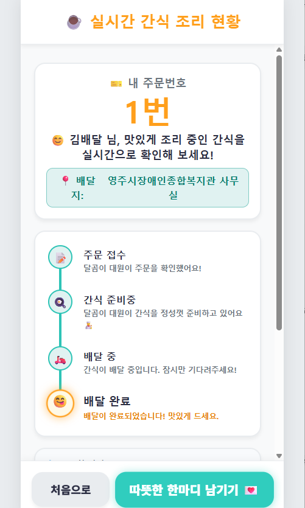
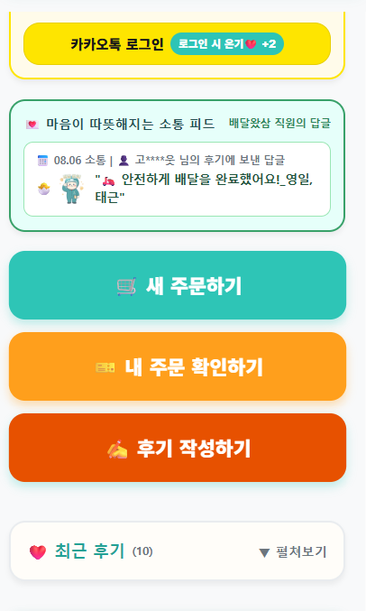
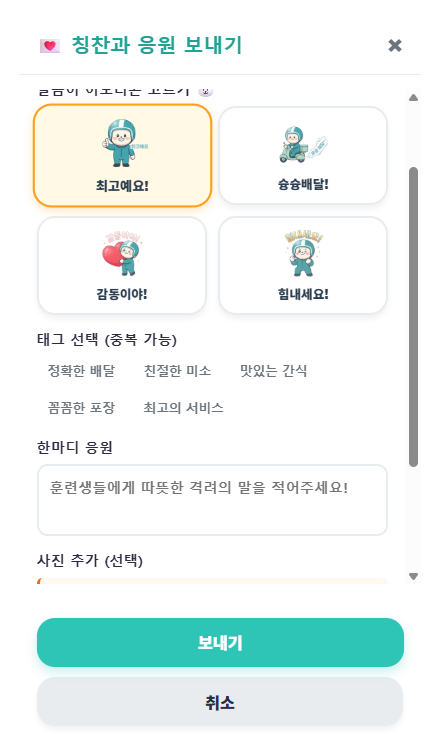

방법 1
배달 완료 화면에서 작성하기
따뜻한 한마디 남기기를
눌러주세요.
아래 실제 화면에서 찾아보세요

따뜻한 마음을 전해주세요
배달이 완료되면 두 방법 중
편한 곳에서 후기를 시작할 수 있어요.
따뜻한 한마디 남기기를
눌러주세요.
아래 실제 화면에서 찾아보세요

완료 화면을 지나쳤다면
후기 작성하기를 눌러주세요.
아래 실제 화면에서 찾아보세요

달곰이 이모티콘과 칭찬을 고르고,
한마디를 적은 뒤 보내기를 눌러주세요.
사진은 선택 사항이에요.
아래 실제 화면에서 찾아보세요


남겨주신 따뜻한 한마디를 소중히 전할게요.